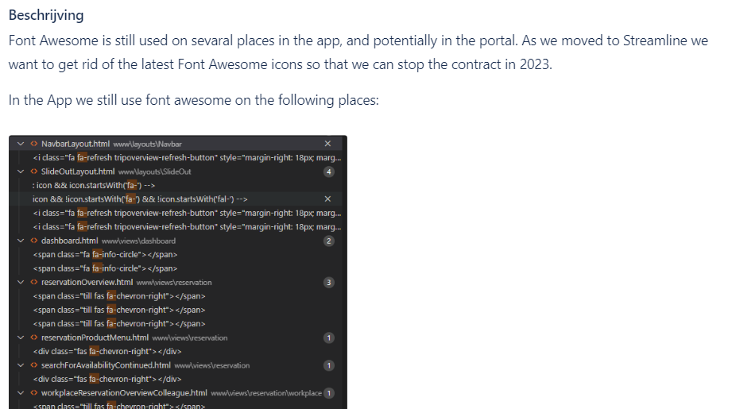

Ik wil een backlog item geanalyseerd en beschreven hebben dat voldoet aan de verwachtingen van het team.
Dit leerdoel heb ik gesteld om mij te verdiepen in de code van het systeem en bezig te zijn met verschillende schermen tijdens het analyseren van een taak hoop ik meer ervaring op te doen hoe het systeem in elkaar zit en door het process van analyseren gaan.
Inleiding
Op de website staan op verschillende plekken nog font-awesome iconen. Sinds er overgegaan is op Streamline iconen is de vraag om deze iconen te vervangen om de licentie voor fontawesome te stoppen voor volgend jaar. Omdat de licentie hiervan verloopt en niet meer verlengd gaat worden door de overstap naar Streamline is de vraag om na te gaan of deze icons de gratis versie van font-awesome gebruiken of niet en of er gelijkwaardige vervingen hiervoor zijn die zonder problemen doorgevoerd kunnen worden.
Werkwijze
Om de functionaliteiten te testen heb ik deze eerst op een rijtje gezet in een test plan en dit test plan document opgezet. Hierna ben ik door elk test gelopen en heb ik de resultaten hiervan gedocumenteerd.
Process - stappen tot afronding
- Zoeken naar een werkzaamheid in de backlog die ik kan oppakken en analyseren
- Opzoeken van alle instanties waar een font awesome icon gebruikt word
- Opzoeken van het scherm waar de code gebruikt word
- Scherm afbeelding maken van de iconen en de locatie opschrijven
- Opzoeken van een gelijkwaardige icon in Streamline.
- Documentatie toevoegen aan de backlog ticket en de ticket updaten.
Bewijzen
De documentatie van de geanalyseerde iconen
Feedback
Reflectie